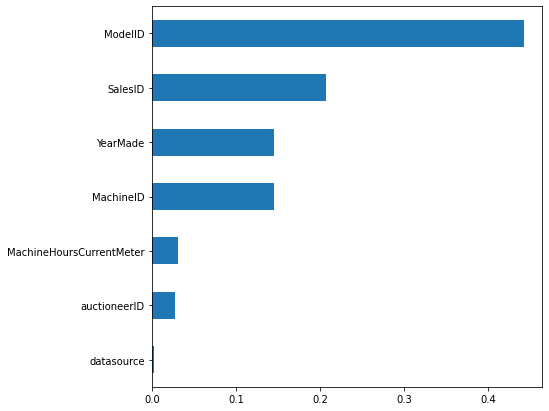
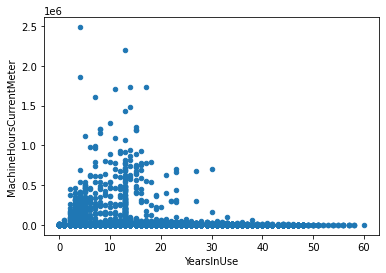
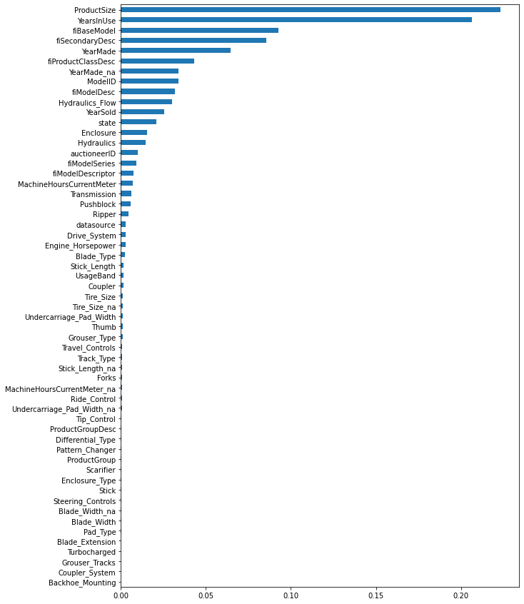
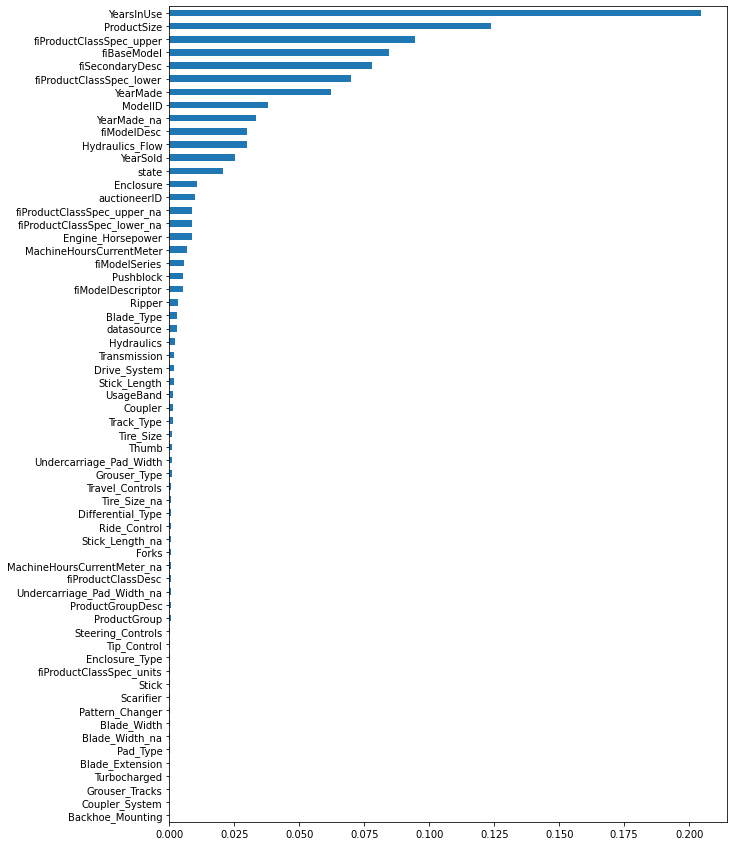
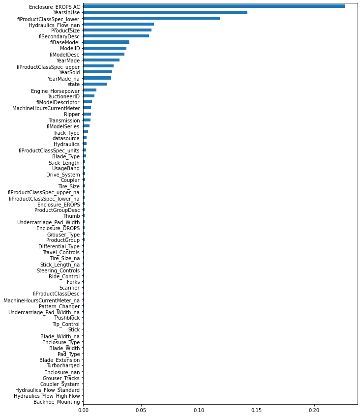
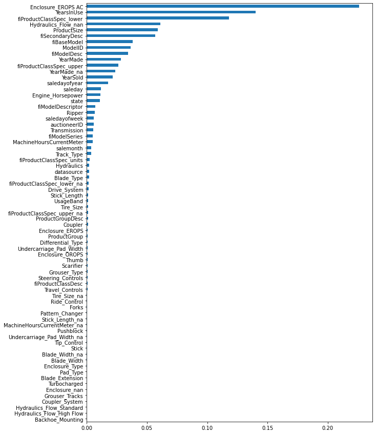

Code
python==3.8.8
sklearn==1.0.2
numpy==1.20.1
pandas==1.2.3
matplotlib==3.5.1
This notebook explores and builds a model for a bulldozer auction prices dataset from the Kaggle competition.
python==3.8.8
sklearn==1.0.2
numpy==1.20.1
pandas==1.2.3
matplotlib==3.5.1Train.csv. This is our training dataset.Valid.csv. This is our validation dataset.Test.csv. This is our test dataset.This dataset can be downloaded from the Kaggle competition site, and extracted files should be placed under folder ./datasets/2022-04-35-bluebook-for-bulldozers/. These files are made available with this notebook in the GitHub repository and can be downloaded from there too. If you are using Git then it will not download them from the remote server as they exceed 50MB limit (read more here). For working with large files Git needs an extra extension to work with them called git-lfs.
Follow the steps from Git-LFS site to install it on the system. To install it directly from the notebook (running on Linux) use these commands
Once git-lfs is installed use the below command to download large files from the remote server (GitHub).
Load the training data and look for the following information * column names * column data types * how much data is missing? * sample data elements
##
# print training dataset summary information
df_info = pd.DataFrame()
df_info['sample'] = df.iloc[0]
df_info['data_type'] = df.dtypes
df_info['percent_missing'] = 100*df.isnull().sum() / len(df)
print(f"Total features: {len(df.columns)}")
df_info.sort_values('percent_missing')| sample | data_type | percent_missing | |
|---|---|---|---|
| SalesID | 1139246 | int64 | 0.000000 |
| state | Alabama | object | 0.000000 |
| fiProductClassDesc | Wheel Loader - 110.0 to 120.0 Horsepower | object | 0.000000 |
| fiBaseModel | 521 | object | 0.000000 |
| fiModelDesc | 521D | object | 0.000000 |
| ProductGroup | WL | object | 0.000000 |
| saledate | 11/16/2006 0:00 | object | 0.000000 |
| datasource | 121 | int64 | 0.000000 |
| ModelID | 3157 | int64 | 0.000000 |
| MachineID | 999089 | int64 | 0.000000 |
| SalePrice | 66000 | int64 | 0.000000 |
| YearMade | 2004 | int64 | 0.000000 |
| ProductGroupDesc | Wheel Loader | object | 0.000000 |
| Enclosure | EROPS w AC | object | 0.081022 |
| auctioneerID | 3.0 | float64 | 5.019882 |
| Hydraulics | 2 Valve | object | 20.082269 |
| fiSecondaryDesc | D | object | 34.201558 |
| Coupler | None or Unspecified | object | 46.662013 |
| Forks | None or Unspecified | object | 52.115425 |
| ProductSize | NaN | object | 52.545964 |
| Transmission | NaN | object | 54.320972 |
| Ride_Control | None or Unspecified | object | 62.952696 |
| MachineHoursCurrentMeter | 68.0 | float64 | 64.408850 |
| Drive_System | NaN | object | 73.982923 |
| Ripper | NaN | object | 74.038766 |
| Undercarriage_Pad_Width | NaN | object | 75.102026 |
| Thumb | NaN | object | 75.247616 |
| Stick_Length | NaN | object | 75.265067 |
| Pattern_Changer | NaN | object | 75.265067 |
| Grouser_Type | NaN | object | 75.281271 |
| Track_Type | NaN | object | 75.281271 |
| Tire_Size | None or Unspecified | object | 76.386912 |
| Travel_Controls | NaN | object | 80.097476 |
| Blade_Type | NaN | object | 80.097725 |
| Turbocharged | NaN | object | 80.271985 |
| Stick | NaN | object | 80.271985 |
| Pad_Type | NaN | object | 80.271985 |
| Backhoe_Mounting | NaN | object | 80.387161 |
| fiModelDescriptor | NaN | object | 82.070676 |
| UsageBand | Low | object | 82.639078 |
| Differential_Type | Standard | object | 82.695918 |
| Steering_Controls | Conventional | object | 82.706388 |
| fiModelSeries | NaN | object | 85.812901 |
| Coupler_System | NaN | object | 89.165971 |
| Grouser_Tracks | NaN | object | 89.189903 |
| Hydraulics_Flow | NaN | object | 89.189903 |
| Scarifier | NaN | object | 93.710190 |
| Pushblock | NaN | object | 93.712932 |
| Engine_Horsepower | NaN | object | 93.712932 |
| Enclosure_Type | NaN | object | 93.712932 |
| Blade_Width | NaN | object | 93.712932 |
| Blade_Extension | NaN | object | 93.712932 |
| Tip_Control | NaN | object | 93.712932 |
| SalesID | SalePrice | MachineID | ModelID | datasource | auctioneerID | YearMade | MachineHoursCurrentMeter | UsageBand | saledate | fiModelDesc | fiBaseModel | fiSecondaryDesc | fiModelSeries | fiModelDescriptor | ProductSize | fiProductClassDesc | state | ProductGroup | ProductGroupDesc | Drive_System | Enclosure | Forks | Pad_Type | Ride_Control | Stick | Transmission | Turbocharged | Blade_Extension | Blade_Width | Enclosure_Type | Engine_Horsepower | Hydraulics | Pushblock | Ripper | Scarifier | Tip_Control | Tire_Size | Coupler | Coupler_System | Grouser_Tracks | Hydraulics_Flow | Track_Type | Undercarriage_Pad_Width | Stick_Length | Thumb | Pattern_Changer | Grouser_Type | Backhoe_Mounting | Blade_Type | Travel_Controls | Differential_Type | Steering_Controls | |
|---|---|---|---|---|---|---|---|---|---|---|---|---|---|---|---|---|---|---|---|---|---|---|---|---|---|---|---|---|---|---|---|---|---|---|---|---|---|---|---|---|---|---|---|---|---|---|---|---|---|---|---|---|---|
| 0 | 1139246 | 66000 | 999089 | 3157 | 121 | 3.0 | 2004 | 68.0 | Low | 11/16/2006 0:00 | 521D | 521 | D | NaN | NaN | NaN | Wheel Loader - 110.0 to 120.0 Horsepower | Alabama | WL | Wheel Loader | NaN | EROPS w AC | None or Unspecified | NaN | None or Unspecified | NaN | NaN | NaN | NaN | NaN | NaN | NaN | 2 Valve | NaN | NaN | NaN | NaN | None or Unspecified | None or Unspecified | NaN | NaN | NaN | NaN | NaN | NaN | NaN | NaN | NaN | NaN | NaN | NaN | Standard | Conventional |
| 1 | 1139248 | 57000 | 117657 | 77 | 132 | 1.0 | 1996 | 4640.0 | High | 3/26/2004 0:00 | 950FII | 950 | F | II | LC | Medium | Wheel Loader - 150.0 to 175.0 Horsepower | North Carolina | SSL | Skid Steer Loaders | Four Wheel Drive | OROPS | NaN | None or Unspecified | NaN | Extended | Powershuttle | None or Unspecified | Yes | None or Unspecified | None or Unspecified | No | Auxiliary | None or Unspecified | None or Unspecified | Yes | Sideshift & Tip | 23.5 | NaN | None or Unspecified | None or Unspecified | Standard | Steel | None or Unspecified | None or Unspecified | None or Unspecified | None or Unspecified | Double | None or Unspecified | PAT | None or Unspecified | NaN | NaN |
| 2 | 1139249 | 10000 | 434808 | 7009 | 136 | 2.0 | 2001 | 2838.0 | Medium | 2/26/2004 0:00 | 226 | 226 | NaN | -6E | 6 | Small | Skid Steer Loader - 1351.0 to 1601.0 Lb Operat... | New York | TEX | Track Excavators | Two Wheel Drive | EROPS | Yes | Reversible | No | Standard | Standard | Yes | None or Unspecified | 12' | Low Profile | Variable | NaN | Yes | Yes | None or Unspecified | None or Unspecified | NaN | Manual | Yes | Yes | High Flow | Rubber | 16 inch | 11' 0" | Hydraulic | Yes | Triple | Yes | None or Unspecified | Differential Steer | Limited Slip | Command Control |
| 3 | 1139251 | 38500 | 1026470 | 332 | 149 | 11.0 | 2007 | 3486.0 | NaN | 5/19/2011 0:00 | PC120-6E | PC120 | G | LC | L | Large / Medium | Hydraulic Excavator, Track - 12.0 to 14.0 Metr... | Texas | BL | Backhoe Loaders | No | NaN | None | Street | Yes | None | Powershift | None | None | 14' | High Profile | None | Standard | None | Single Shank | None | Tip | 13" | Hydraulic | None | None | None or Unspecified | None | 32 inch | 15' 9" | Manual | No | Single | None | Semi U | Lever | No Spin | Four Wheel Standard |
| 4 | 1139253 | 11000 | 1057373 | 17311 | 172 | 4.0 | 1993 | 722.0 | None | 7/23/2009 0:00 | S175 | S175 | E | -5 | LT | Mini | Skid Steer Loader - 1601.0 to 1751.0 Lb Operat... | Arizona | TTT | Track Type Tractors | All Wheel Drive | EROPS AC | None | Grouser | None | None | None or Unspecified | None | None | 13' | None | None | Base + 1 Function | None | Multi Shank | None | None | 26.5 | None | None | None | None | None | 28 inch | 10' 2" | None | None | None | None | VPAT | Finger Tip | Locking | Wheel |
| 5 | 1139255 | 26500 | 1001274 | 4605 | None | 7.0 | 2008 | 508.0 | None | 12/18/2008 0:00 | 310G | 310 | HAG | III | CR | Large | Backhoe Loader - 14.0 to 15.0 Ft Standard Digg... | Florida | MG | Motor Graders | None | NO ROPS | None | None | None | None | Hydrostatic | None | None | 16' | None | None | Base + 3 Function | None | None | None | None | 29.5 | None | None | None | None | None | 30 inch | 10' 6" | None | None | None | None | Straight | 2 Pedal | None | No |
| 6 | 1139256 | 21000 | 772701 | 1937 | None | 99.0 | 1000 | 11540.0 | None | 8/26/2004 0:00 | 790ELC | 790 | B | -1 | SB | Compact | Hydraulic Excavator, Track - 21.0 to 24.0 Metr... | Illinois | None | None | None | None or Unspecified | None | None | None | None | Autoshift | None | None | <12' | None | None | 4 Valve | None | None | None | None | 14" | None | None | None | None | None | 22 inch | 9' 10" | None | None | None | None | Angle | Pedal | None | None |
From this first look at the data, we can see that * data is of three types * numeric * string * datetime * some columns have missing data up to 94% e.g. Tip_Control * missing data is represented as * NaN * None or unspecified * some columns’ data types need to be corrected for example * SaleID, MachineID are represented as integers but they are categorical nominal features meaning each value is discrete and has no relation among them * UsageBand is of type string but is a categorical ordinal feature meaning their values cannot be measured but have some order between them * Tire_size, Stick_length are actual measurements and need to be converted to appropriate units
It is a good idea to create a baseline model early in the data science project as it can help to establish a baseline for * time it takes to train a model * if the baseline model is taking too much time then we may use a smaller set of the training data for further steps * feature importances * it can help us establish a relationship between features and the target * help us remove features that have no relationship with the target sooner * model performance * we can take this model performance as a baseline, and compare it to see how much cleanup and feature engineering steps improve the model performance
For the baseline model, we would have to rely on numerical features as they don’t require any preprocessing and can be readily used. Some numerical features have too much missing data so we have to be selective here.
##
# filter columns that are not string along with their percentage of missing data
numerical_features = df_info.loc[df_info.data_type != 'object'].sort_values('percent_missing')
numerical_features| sample | data_type | percent_missing | |
|---|---|---|---|
| SalesID | 1139246 | int64 | 0.000000 |
| SalePrice | 66000 | int64 | 0.000000 |
| MachineID | 999089 | int64 | 0.000000 |
| ModelID | 3157 | int64 | 0.000000 |
| datasource | 121 | int64 | 0.000000 |
| YearMade | 2004 | int64 | 0.000000 |
| auctioneerID | 3.0 | float64 | 5.019882 |
| MachineHoursCurrentMeter | 68.0 | float64 | 64.408850 |
From these numerical features MachineHoursCurrentMeter has around 64% missing data. Let’s keep this feature as well for our baseline model.
##
# establish target and baseline features
target = 'SalePrice' # this is the feature we are trying to predict
baseline_features = list(numerical_features.index)
baseline_features.remove(target) # remove target feature form input variables
baseline_features['SalesID',
'MachineID',
'ModelID',
'datasource',
'YearMade',
'auctioneerID',
'MachineHoursCurrentMeter']We have established our target and features, and can now train our baseline model. We will use only RandomForrest for this dataset. We have 7 features to learn from so let’s start with n_estimators=70
from sklearn.ensemble import RandomForestRegressor
X, y = df[baseline_features], df[target]
X = X.fillna(0) # replace missing numerical values with 0
rf = RandomForestRegressor(n_estimators=70, oob_score=True, n_jobs=-1, verbose=1)
rf.fit(X, y)
oob_score = rf.oob_score_
oob_score[Parallel(n_jobs=-1)]: Using backend ThreadingBackend with 4 concurrent workers.
[Parallel(n_jobs=-1)]: Done 42 tasks | elapsed: 1.2min
[Parallel(n_jobs=-1)]: Done 70 out of 70 | elapsed: 1.9min finished0.7901663917842495Besides the OOB score, we can also interpret our model by looking into the trained model trees’ depth and leaves. If OOB score is same but our trees are smaller with fewer nodes then that model is better and more generalized. Larger trees make the model more complex and less generalized. For this let’s create two more functions.
import numpy as np
def rf_n_leaves(rf):
"""
return the total number of nodes in all the trees of the forrest.
"""
return sum(est.tree_.n_leaves for est in rf.estimators_)
def rf_m_depth(rf):
"""
return a median height of all the trees of the forrest.
"""
return np.median([est.tree_.max_depth for est in rf.estimators_])##
# print model oob_score, number of forrest leaves and median height
n_leaves = rf_n_leaves(rf)
m_depth = rf_m_depth(rf)
print(f"OOB scrore = {oob_score: .3f} \nTree leaves = {n_leaves: ,d} \nMedian depth = {m_depth}")OOB scrore = 0.790
Tree leaves = 16,209,726
Median depth = 53.5Our baseline model has an OOB score of just around 79% which is not bad as a starter. Now let’s also plot the feature importance for this model.
feature_importance = rf.feature_importances_
feature_names = X.columns
plot_feature_importance(feature_importance, feature_names)
From this feature importance plot, we can see that * ModelID is the highest predictor of SalePrice. This could be because vehicles belonging to a certain ModelID category could have their SalePrice in the same range. * SalesID and MachineID are coming up next as important features. This is not a good signal as both these features are unique for sale transactions and machine identification. MachineID also has inconsistencies as noted in this kaggle discussion. A model using these features will not be generalized. It would be better if we remove these features altogether otherwise they can affect the model’s performance. * YearMade comes next which also makes sense as older vehicles will have less price compared to the new ones.
In this section we will remove unimportanct features and fix the data types of remaining features.
As noted in last section we noted that following ID features can be removed from the dataset. * SalesID * MachineID
Let’s visit each feature from our dataset and check whether we need to fix the data type. Use df_info created in the last section to verify the data types of each feature.
Let’s first visit the numerical feature.
It has the datatype as float64 but this feature is actually categorical nominal as each ID is discrete and has no relation between them. It should be of type str. So let’s fix that.
Let’s visit DateTime features and correct their data type #### saledate ‘saledate’ is a DateTime feature. So let’s correct its data type.
Let’s now visit the categorical features.
For categorical features, there is no better way than printing the unique values for each column and spend some time analyzing the values. Analyze * if the feature has some missing values * if there are any missing values but are represented by some other value like ‘Unspecified’, ‘None or Unspecified’ * keep a separate sheet with all the features and make notes for each feature like * there are no further actions required. The feature is good for use * need to replace missing values * any other observations * etc.
After visiting all the features we have found that missing values are represented in multiple ways like * Unspecified * None or Unspecified * None * #NAME? * “”
So we would transform and replace all these values with np.nan so they all represent the same thing.
array(['2 Valve', 'Auxiliary', nan, 'Standard', 'Base + 1 Function',
'Base + 3 Function', '4 Valve', '3 Valve', 'Base + 2 Function',
'Base + 4 Function', 'None or Unspecified', 'Base + 5 Function',
'Base + 6 Function'], dtype=object)#collapse-output
def normalize_str_values(df):
"""
normalize dataframe str values
* transform case to lowercase
* replace missing values with np.nan
"""
for col in df.columns:
if df[col].dtype == object:
print(f"normalize column: {col}")
df[col] = df[col].str.lower()
df[col] = df[col].fillna(np.nan)
df[col] = df[col].replace('unspecified', np.nan)
df[col] = df[col].replace('none or unspecified', np.nan)
df[col] = df[col].replace('none', np.nan)
df[col] = df[col].replace('#name?', np.nan)
df[col] = df[col].replace('', np.nan)
normalize_str_values(df)normalize column: auctioneerID
normalize column: UsageBand
normalize column: fiModelDesc
normalize column: fiBaseModel
normalize column: fiSecondaryDesc
normalize column: fiModelSeries
normalize column: fiModelDescriptor
normalize column: ProductSize
normalize column: fiProductClassDesc
normalize column: state
normalize column: ProductGroup
normalize column: ProductGroupDesc
normalize column: Drive_System
normalize column: Enclosure
normalize column: Forks
normalize column: Pad_Type
normalize column: Ride_Control
normalize column: Stick
normalize column: Transmission
normalize column: Turbocharged
normalize column: Blade_Extension
normalize column: Blade_Width
normalize column: Enclosure_Type
normalize column: Engine_Horsepower
normalize column: Hydraulics
normalize column: Pushblock
normalize column: Ripper
normalize column: Scarifier
normalize column: Tip_Control
normalize column: Tire_Size
normalize column: Coupler
normalize column: Coupler_System
normalize column: Grouser_Tracks
normalize column: Hydraulics_Flow
normalize column: Track_Type
normalize column: Undercarriage_Pad_Width
normalize column: Stick_Length
normalize column: Thumb
normalize column: Pattern_Changer
normalize column: Grouser_Type
normalize column: Backhoe_Mounting
normalize column: Blade_Type
normalize column: Travel_Controls
normalize column: Differential_Type
normalize column: Steering_Controls##
# after transformation.
# remember that transformation is applied to all string type columns. We are using just one column to verify the results.
df['Hydraulics'].unique()array(['2 valve', 'auxiliary', nan, 'standard', 'base + 1 function',
'base + 3 function', '4 valve', '3 valve', 'base + 2 function',
'base + 4 function', 'base + 5 function', 'base + 6 function'],
dtype=object)Some features are represented as a string but actually they are numerical measurement values. For example * Tire_Size has the size in inches with a symbol attached " * Undercarriage_Pad_Width has the size in inches with the unit attached inch * Blade_Width has the size in cm with a symbol attached '. It also has values less the 12cm represented as <12' * Stick_Length has values in both feet and inches. We can simply convert them from 19\'8" to 19.8 * After the above transformations, their data types should be converted to numeric
let’s apply these changes to our dataset.
##
# before transformation
for col in ['Tire_Size', 'Undercarriage_Pad_Width', 'Blade_Width', 'Stick_Length']:
print(f"**{col}**: ", df[col].unique())**Tire_Size**: [nan '23.5' '13"' '26.5' '29.5' '14"' '20.5' '17.5"' '15.5"' '20.5"'
'17.5' '7.0"' '15.5' '23.5"' '10"' '23.1"' '10 inch']
**Undercarriage_Pad_Width**: [nan '16 inch' '32 inch' '28 inch' '30 inch' '22 inch' '24 inch' '18 inch'
'36 inch' '20 inch' '27 inch' '15 inch' '26 inch' '34 inch' '33 inch'
'14 inch' '31 inch' '25 inch' '31.5 inch']
**Blade_Width**: [nan "12'" "14'" "13'" "16'" "<12'"]
**Stick_Length**: [nan '11\' 0"' '15\' 9"' '10\' 2"' '10\' 6"' '9\' 10"' '10\' 10"' '9\' 6"'
'9\' 7"' '12\' 8"' '8\' 2"' '8\' 6"' '9\' 8"' '12\' 10"' '11\' 10"'
'8\' 10"' '8\' 4"' '12\' 4"' '9\' 5"' '6\' 3"' '14\' 1"' '13\' 7"'
'13\' 10"' '13\' 9"' '7\' 10"' '15\' 4"' '9\' 2"' '24\' 3"' '19\' 8"']##
# after transformation
for col in ['Tire_Size', 'Undercarriage_Pad_Width', 'Blade_Width', 'Stick_Length']:
print(f"**{col}**: ", df[col].unique())**Tire_Size**: [ nan 23.5 13. 26.5 29.5 14. 20.5 17.5 15.5 7. 10. 23.1]
**Undercarriage_Pad_Width**: [ nan 16. 32. 28. 30. 22. 24. 18. 36. 20. 27. 15. 26. 34.
33. 14. 31. 25. 31.5]
**Blade_Width**: [nan 12. 14. 13. 16.]
**Stick_Length**: [ nan 11. 15.9 10.2 10.6 9.1 10.1 9.6 9.7 12.8 8.2 8.6 9.8 12.1
11.1 8.1 8.4 12.4 9.5 6.3 14.1 13.7 13.1 13.9 7.1 15.4 9.2 24.3
19.8]For numerical features, we will follow the following approach to replace missing values * For a column x create a new column x_na where x_na[i] is marked as True if x[i] is missing * Replace the missing values in the x column with a median value
“YearMade” doesn’t show any missing values but if we look closely at the data we will find that some instances have the value “1000”. The year 1000 is very unlikely for any vehicle to be made in and we can consider these instances as missing values. Let’s do that
<AxesSubplot:xlabel='YearMade', ylabel='SalePrice'>
<AxesSubplot:xlabel='YearMade', ylabel='SalePrice'>
The plot now shows a more clear relationship between ‘YearMade’ and ‘SalePrice’. But the spike in the year 1920 is still concerning. Most probably it is also a recording error when the manufacturing year was not known then it was assigned some lowest available value in the system (similar to the year 1000). Let’s take this assumption that manufacturing years before 1950 are unknown and should be assigned np.nan
<AxesSubplot:xlabel='YearMade', ylabel='SalePrice'>
Let’s also replace the missing values with the function created above.
The next numerical feature that comes is MachineHoursCurrentMeter. This feature tells us the number of hours a machine has been in use when it was brought to the auction. So older machines are much more likely to have more hours on them as compared to newer machines. There should be a correlation between machine hours and the vehicle in use period (a period between manufacturing and auction). To verify this relationship we first need to find the period in years between manufacturing and auction. We have the ‘YearMade’ that tells us when the vehicle was made. We have the ‘saledate’ which is a DateTime string object but we can use it to find the ‘YearSold’.
| saledate | YearSold | |
|---|---|---|
| 0 | 2006-11-16 | 2006 |
| 1 | 2004-03-26 | 2004 |
| 2 | 2004-02-26 | 2004 |
| 3 | 2011-05-19 | 2011 |
| 4 | 2009-07-23 | 2009 |
Now we can use ‘YearMade’ and ‘YearSold’ to find the number of years the vehicle remained in use. Let’s call this new column ‘YearsInUse’
| YearsInUse | YearSold | YearMade | |
|---|---|---|---|
| 0 | 2.0 | 2006 | 2004.0 |
| 1 | 8.0 | 2004 | 1996.0 |
| 2 | 3.0 | 2004 | 2001.0 |
| 3 | 10.0 | 2011 | 2001.0 |
| 4 | 2.0 | 2009 | 2007.0 |
A sold year cannot be less than a manufacturing year. So let’s verify data integrity as well.
| YearsInUse | saledate | YearSold | YearMade | |
|---|---|---|---|---|
| 24007 | -2.0 | 1994-02-11 | 1994 | 1996.0 |
| 24009 | -1.0 | 1995-04-18 | 1995 | 1996.0 |
| 24015 | -2.0 | 1994-09-20 | 1994 | 1996.0 |
| 24029 | -1.0 | 1995-04-28 | 1995 | 1996.0 |
| 24064 | -1.0 | 1995-04-28 | 1995 | 1996.0 |
YearInUse cannot have a negative value and this shows that either ‘YearMade’ or ‘saledate’ is incorrect. We can assume that error can be with ‘YearMade’ as this is an auction dataset and ‘saledate’ will be more reliable. For entries where ‘YearMade’ is greater than ‘YearSold’ we can replace ‘YearMade’ with ‘YearSold’ (better to have ‘YearsInUse’ equal to zero than negative).
Let’s recalculate the ‘YearsInUse’ with corrected data.
Let’s verify that the data is consistent and all vehicles have ‘YearMade’ less than their ‘YearSold’
| YearsInUse | saledate | YearSold | YearMade |
|---|
We can now plot the relationship between ‘YearsInUse’ and ‘MachineHoursCurrentMeter’
<AxesSubplot:xlabel='YearsInUse', ylabel='MachineHoursCurrentMeter'>
This plot shows that there is some relation between a vehicle being in use and its meter hours. As the ‘YearsInUse’ value increases we also see an increase in meter hours, but after around 15 ‘YearsInUse’ the relationship does not hold on and meter hours start dropping to zero. It means that MachineHoursCurrentMeter data has inconsistencies as many vehicles remained in use for multiple years but they also have zero meter readings. This is very unrealistic and vehicles will not be sitting idle for many years till their auction. It could be that the meter reading for them was not known and 0 could have been used for the ‘Unspecified or Unknown’ value.
Let’s take this assumption and transform ‘MachineHoursCurrentMeter’ to correctly represent that
Also apply our missing values fix on this feature
The next numerical feature is ‘Tire_Size’. We can plot the distribution of tire sizes to find any outliers.
array([ 7. , 10. , 13. , 14. , 15.5, 17.5, 20.5, 23.1, 23.5, 26.5, 29.5,
nan])The plot does not show any outliers and data seems consistant, so we can apply our missing values fix on this feature.
The Next numerical feature is ‘Stick_Lenght’. Let’s plot the distribution to check for any outliers.
array([ 6.3, 7.1, 8.1, 8.2, 8.4, 8.6, 9.1, 9.2, 9.5, 9.6, 9.7,
9.8, 10.1, 10.2, 10.6, 11. , 11.1, 12.1, 12.4, 12.8, 13.1, 13.7,
13.9, 14.1, 15.4, 15.9, 19.8, 24.3, nan])The above plot shows a normal distribution and no outliers. So we can apply our missing values fix on this feature.
Next numerical feature is ‘Undercarriage_Pad_Width’. Let’s follow the same steps for this feature.
array([14. , 15. , 16. , 18. , 20. , 22. , 24. , 25. , 26. , 27. , 28. ,
30. , 31. , 31.5, 32. , 33. , 34. , 36. , nan])The distribution for this feature looks fine, and we can apply missing values fix on it.
Next numerical feature in ‘Blade_Width’. Following the same steps as before.
Apply the fix on this feature.
encoding and checking the importance We will now replace missing values for categorical features in the following way. * We will label encode them. We will treat them as ordinal features and assign them a numeric value * Missing values will automatically be assigned a value, and that will be 0
Some important discussion points on treating nominal categorical features as ordinal and then encoding them. A more prevalent approach is to one hot encode (OHE) them. The drawback of OHE approach is that it makes the decision trees very unbalanced if the dataset has multiple categorical features with high variance. So instead of applying OHE to all features, we will do it in a two-step approach. First, we will label encode them and train a model on them. After that, we will check their feature importance, and if a feature comes up as an important with a low variance then we will use OHE for it. Otherwise we will leave them with label encoding.
More can be read about categorical features encoding from these references * The Mechanics of Machine Learning by Terence Parr and Jeremy Howard section 6.2 * Getting Deeper into Categorical Encodings for Machine Learning * One-Hot Encoding is making your Tree-Based Ensembles worse, here’s why?
Let’s create some functions to encode our categorical features.
from pandas.api.types import is_categorical_dtype, is_string_dtype
def df_string_to_cat(df):
for col in df.columns:
if is_string_dtype(df[col]):
print(f"label encoding applied on {col}")
df[col] = df[col].astype('category').cat.as_ordered()
def df_cat_to_catcode(df):
for col in df.columns:
if is_categorical_dtype(df[col]):
df[col] = df[col].cat.codes + 1Please note that Pandas represents np.nan with category code “-1”, and so adding “1” in function df_cat_to_catcode shifts np.nan to 0 and all category codes to be 1 and above.
| 0 | 1 | 2 | 3 | 4 | |
|---|---|---|---|---|---|
| SalePrice | 66000 | 57000 | 10000 | 38500 | 11000 |
| ModelID | 3157 | 77 | 7009 | 332 | 17311 |
| datasource | 121 | 121 | 121 | 121 | 121 |
| auctioneerID | 3.0 | 3.0 | 3.0 | 3.0 | 3.0 |
| YearMade | 2004.0 | 1996.0 | 2001.0 | 2001.0 | 2007.0 |
| MachineHoursCurrentMeter | 68.0 | 4640.0 | 2838.0 | 3486.0 | 722.0 |
| UsageBand | low | low | high | high | medium |
| saledate | 2006-11-16 00:00:00 | 2004-03-26 00:00:00 | 2004-02-26 00:00:00 | 2011-05-19 00:00:00 | 2009-07-23 00:00:00 |
| fiModelDesc | 521d | 950fii | 226 | pc120-6e | s175 |
| fiBaseModel | 521 | 950 | 226 | pc120 | s175 |
label encoding applied on auctioneerID
label encoding applied on UsageBand
label encoding applied on fiModelDesc
label encoding applied on fiBaseModel
label encoding applied on fiSecondaryDesc
label encoding applied on fiModelSeries
label encoding applied on fiModelDescriptor
label encoding applied on ProductSize
label encoding applied on fiProductClassDesc
label encoding applied on state
label encoding applied on ProductGroup
label encoding applied on ProductGroupDesc
label encoding applied on Drive_System
label encoding applied on Enclosure
label encoding applied on Forks
label encoding applied on Pad_Type
label encoding applied on Ride_Control
label encoding applied on Stick
label encoding applied on Transmission
label encoding applied on Turbocharged
label encoding applied on Blade_Extension
label encoding applied on Enclosure_Type
label encoding applied on Engine_Horsepower
label encoding applied on Hydraulics
label encoding applied on Pushblock
label encoding applied on Ripper
label encoding applied on Scarifier
label encoding applied on Tip_Control
label encoding applied on Coupler
label encoding applied on Coupler_System
label encoding applied on Grouser_Tracks
label encoding applied on Hydraulics_Flow
label encoding applied on Track_Type
label encoding applied on Thumb
label encoding applied on Pattern_Changer
label encoding applied on Grouser_Type
label encoding applied on Backhoe_Mounting
label encoding applied on Blade_Type
label encoding applied on Travel_Controls
label encoding applied on Differential_Type
label encoding applied on Steering_Controls| 0 | 1 | 2 | 3 | 4 | |
|---|---|---|---|---|---|
| SalePrice | 66000 | 57000 | 10000 | 38500 | 11000 |
| ModelID | 3157 | 77 | 7009 | 332 | 17311 |
| datasource | 121 | 121 | 121 | 121 | 121 |
| auctioneerID | 23 | 23 | 23 | 23 | 23 |
| YearMade | 2004.0 | 1996.0 | 2001.0 | 2001.0 | 2007.0 |
| MachineHoursCurrentMeter | 68.0 | 4640.0 | 2838.0 | 3486.0 | 722.0 |
| UsageBand | 2 | 2 | 1 | 1 | 3 |
| saledate | 2006-11-16 00:00:00 | 2004-03-26 00:00:00 | 2004-02-26 00:00:00 | 2011-05-19 00:00:00 | 2009-07-23 00:00:00 |
| fiModelDesc | 950 | 1725 | 331 | 3674 | 4208 |
| fiBaseModel | 296 | 527 | 110 | 1375 | 1529 |
At this point, all our numerical and categorical features have been preprocessed. There should be no missing values, and all categorical features should have been encoded. Only DateTime columns are remaining to be processed and we will do that in the next section.
Let’s verify the data using summary information.
df_info = pd.DataFrame()
df_info['sample'] = df.iloc[0]
df_info['data_type'] = df.dtypes
df_info['percent_missing'] = 100*df.isnull().sum() / len(df)
print(f"Total features: {len(df.columns)}")
df_info.sort_values('percent_missing')Total features: 59| sample | data_type | percent_missing | |
|---|---|---|---|
| SalePrice | 66000 | int64 | 0.0 |
| Pushblock | 0 | int8 | 0.0 |
| Ripper | 0 | int8 | 0.0 |
| Scarifier | 0 | int8 | 0.0 |
| Tip_Control | 0 | int8 | 0.0 |
| Tire_Size | 20.5 | float64 | 0.0 |
| Coupler | 0 | int8 | 0.0 |
| Coupler_System | 0 | int8 | 0.0 |
| Grouser_Tracks | 0 | int8 | 0.0 |
| Hydraulics_Flow | 0 | int8 | 0.0 |
| Track_Type | 0 | int8 | 0.0 |
| Undercarriage_Pad_Width | 28.0 | float64 | 0.0 |
| Stick_Length | 9.7 | float64 | 0.0 |
| Hydraulics | 1 | int8 | 0.0 |
| Thumb | 0 | int8 | 0.0 |
| Grouser_Type | 0 | int8 | 0.0 |
| Backhoe_Mounting | 0 | int8 | 0.0 |
| Blade_Type | 0 | int8 | 0.0 |
| Travel_Controls | 0 | int8 | 0.0 |
| Differential_Type | 4 | int8 | 0.0 |
| Steering_Controls | 2 | int8 | 0.0 |
| YearMade_na | False | bool | 0.0 |
| YearSold | 2006 | int64 | 0.0 |
| YearsInUse | 2.0 | float64 | 0.0 |
| MachineHoursCurrentMeter_na | False | bool | 0.0 |
| Tire_Size_na | True | bool | 0.0 |
| Stick_Length_na | True | bool | 0.0 |
| Pattern_Changer | 0 | int8 | 0.0 |
| Undercarriage_Pad_Width_na | True | bool | 0.0 |
| Engine_Horsepower | 0 | int8 | 0.0 |
| Blade_Width | 14.0 | float64 | 0.0 |
| ModelID | 3157 | int64 | 0.0 |
| datasource | 121 | int64 | 0.0 |
| auctioneerID | 23 | int8 | 0.0 |
| YearMade | 2004.0 | float64 | 0.0 |
| MachineHoursCurrentMeter | 68.0 | float64 | 0.0 |
| UsageBand | 2 | int8 | 0.0 |
| saledate | 2006-11-16 00:00:00 | datetime64[ns] | 0.0 |
| fiModelDesc | 950 | int16 | 0.0 |
| fiBaseModel | 296 | int16 | 0.0 |
| fiSecondaryDesc | 40 | int16 | 0.0 |
| fiModelSeries | 0 | int8 | 0.0 |
| fiModelDescriptor | 0 | int16 | 0.0 |
| Enclosure_Type | 0 | int8 | 0.0 |
| ProductSize | 0 | int8 | 0.0 |
| state | 1 | int8 | 0.0 |
| ProductGroup | 6 | int8 | 0.0 |
| ProductGroupDesc | 6 | int8 | 0.0 |
| Drive_System | 0 | int8 | 0.0 |
| Enclosure | 3 | int8 | 0.0 |
| Forks | 0 | int8 | 0.0 |
| Pad_Type | 0 | int8 | 0.0 |
| Ride_Control | 0 | int8 | 0.0 |
| Stick | 0 | int8 | 0.0 |
| Transmission | 0 | int8 | 0.0 |
| Turbocharged | 0 | int8 | 0.0 |
| Blade_Extension | 0 | int8 | 0.0 |
| fiProductClassDesc | 59 | int8 | 0.0 |
| Blade_Width_na | True | bool | 0.0 |
Let’s retrain our base model one more time but this time with all the features except datetime columns to see where we stand in our OOB score. Below is a utility function created to quickly iterate over model training.
def train_and_plot_model(df, target='SalePrice', drop_features=[], n_estimators=70, plot=True, verbose=1):
"""
A utility function to train a RandomForrest model on the provided data, and plot the feature importances.
Parameters
----------
df: pandas.DataFrame
input dataset to be used for training
target: str
target feature. this is the feature we are trying to predict
drop_features: list
any features to be dropped before training. Default is empty list.
n_estimators: int
number of estimators to be used for model training. Default is 50.
"""
# target = 'SalePrice' # this is the feature we are trying to predict
features = list(df.columns)
# remove target feature and other specified features form the input variables
features.remove(target)
for f in drop_features:
features.remove(f)
X, y = df[features], df[target]
rf = RandomForestRegressor(n_estimators, oob_score=True, n_jobs=-1, verbose=verbose)
rf.fit(X, y)
oob_score = rf.oob_score_
# get trained model leaves and depth
n_leaves = rf_n_leaves(rf)
m_depth = rf_m_depth(rf)
# print trained model info
print(f"OOB scrore = {oob_score: .3f} \nTree leaves = {n_leaves: ,d} \nMedian depth = {m_depth}")
# plot trained model feature importance
feature_importance = rf.feature_importances_
if plot:
plot_feature_importance(feature_importance, features, (10,15))
# return trained model, feature names, and their importances
return (rf, features, feature_importance, oob_score)##
# keeping n_estimators same as previous base model i.e. 70
(rf, feature_names, feature_importance, oob_pre) = train_and_plot_model(df, drop_features=['saledate'], n_estimators=70)[Parallel(n_jobs=-1)]: Using backend ThreadingBackend with 4 concurrent workers.
[Parallel(n_jobs=-1)]: Done 42 tasks | elapsed: 2.7min
[Parallel(n_jobs=-1)]: Done 70 out of 70 | elapsed: 4.2min finishedOOB scrore = 0.904
Tree leaves = 14,660,873
Median depth = 45.0
This is a big improvement in our model performance. Our base model had 0.790 OOB score and now we are at 0.904. Our features count has also increased from 7 to 59, so we can take one more shot at it by increasing the estomators count (n_estimators). Let’s use 150 trees this time (double that last time) to see how much effect it can have on model performance.
(rf, feature_names, feature_importance, oob_pre) = train_and_plot_model(df, drop_features=['saledate'], n_estimators=150, plot=False)[Parallel(n_jobs=-1)]: Using backend ThreadingBackend with 4 concurrent workers.
[Parallel(n_jobs=-1)]: Done 42 tasks | elapsed: 2.8min
[Parallel(n_jobs=-1)]: Done 150 out of 150 | elapsed: 9.2min finishedOOB scrore = 0.906
Tree leaves = 31,408,663
Median depth = 46.0
Though there is only a slight increase in model performance but it took us significantly more time to train the model. So we will keep our estimators low and revisit them during the tuning phase. With “70” estimators our model performance is
OOB scrore = 0.904
Tree leaves = 14,660,873
Median depth = 45.0At this point, our features have correct data types and their missing values are properly adjusted. We can now focus on some feature engineering aspects. Before moving further let’s also save our dataset till this point so if we make an error we can restart from this checkpoint.
We have used pickle format to preserve data types for saved data.
For feature engineering, we will give priority to important features. For this let us again analyze the preprocessed dataset starting from important features to see what can be done against each feature.
##
# sort the dataframe with important features at the start
temp = pd.Series(feature_importance, feature_names)
cols = temp.nlargest(len(temp)).index
sniff(df[cols], 10)| ProductSize | YearsInUse | fiBaseModel | fiSecondaryDesc | YearMade | fiProductClassDesc | ModelID | YearMade_na | fiModelDesc | Hydraulics_Flow | YearSold | state | Enclosure | Hydraulics | auctioneerID | fiModelSeries | fiModelDescriptor | MachineHoursCurrentMeter | Transmission | Pushblock | Engine_Horsepower | Ripper | Drive_System | datasource | Blade_Type | Stick_Length | UsageBand | Coupler | Tire_Size | Tire_Size_na | Undercarriage_Pad_Width | Thumb | Grouser_Type | Travel_Controls | Track_Type | Stick_Length_na | Forks | MachineHoursCurrentMeter_na | Ride_Control | Undercarriage_Pad_Width_na | Tip_Control | Differential_Type | Pattern_Changer | ProductGroup | ProductGroupDesc | Scarifier | Enclosure_Type | Stick | Steering_Controls | Blade_Width | Blade_Width_na | Pad_Type | Blade_Extension | Turbocharged | Grouser_Tracks | Coupler_System | Backhoe_Mounting | |
|---|---|---|---|---|---|---|---|---|---|---|---|---|---|---|---|---|---|---|---|---|---|---|---|---|---|---|---|---|---|---|---|---|---|---|---|---|---|---|---|---|---|---|---|---|---|---|---|---|---|---|---|---|---|---|---|---|---|
| 0 | 0 | 2.0 | 296 | 40 | 2004.0 | 59 | 3157 | False | 950 | 0 | 2006 | 1 | 3 | 1 | 23 | 0 | 0 | 68.0 | 0 | 0 | 0 | 0 | 0 | 121 | 0 | 9.7 | 2 | 0 | 20.5 | True | 28.0 | 0 | 0 | 0 | 0 | True | 0 | False | 0 | True | 0 | 4 | 0 | 6 | 6 | 0 | 0 | 0 | 2 | 14.0 | True | 0 | 0 | 0 | 0 | 0 | 0 |
| 1 | 4 | 8.0 | 527 | 54 | 1996.0 | 62 | 77 | True | 1725 | 2 | 2004 | 33 | 5 | 4 | 2 | 97 | 65 | 4640.0 | 5 | 1 | 1 | 3 | 2 | 132 | 5 | 11.0 | 1 | 2 | 23.5 | False | 16.0 | 1 | 1 | 3 | 2 | False | 1 | True | 1 | False | 1 | 0 | 2 | 3 | 3 | 1 | 2 | 1 | 0 | 12.0 | False | 2 | 1 | 1 | 1 | 1 | 1 |
| 2 | 6.0 | 3.0 | 110.0 | 0.0 | 2001.0 | 39.0 | 7009.0 | NaN | 331.0 | 1.0 | 2011.0 | 32.0 | 1.0 | 0.0 | 13.0 | 44.0 | 20.0 | 2838.0 | 6.0 | NaN | 2.0 | 2.0 | 4.0 | 136.0 | 6.0 | 15.9 | 3.0 | 1.0 | 13.0 | NaN | 32.0 | 2.0 | 3.0 | 5.0 | 1.0 | NaN | NaN | NaN | 2.0 | NaN | 2.0 | 1.0 | 1.0 | 4.0 | 4.0 | NaN | 1.0 | 2.0 | 1.0 | 13.0 | NaN | 3.0 | NaN | NaN | NaN | NaN | NaN |
| 3 | 3.0 | 10.0 | 1375.0 | 56.0 | 2007.0 | 8.0 | 332.0 | NaN | 3674.0 | NaN | 2009.0 | 44.0 | 0.0 | 11.0 | 4.0 | 102.0 | 64.0 | 3486.0 | 4.0 | NaN | NaN | 1.0 | 3.0 | 149.0 | 9.0 | 10.2 | 0.0 | NaN | 26.5 | NaN | 30.0 | NaN | 2.0 | 4.0 | NaN | NaN | NaN | NaN | NaN | NaN | NaN | 3.0 | NaN | 1.0 | 1.0 | NaN | NaN | NaN | 3.0 | 16.0 | NaN | 1.0 | NaN | NaN | NaN | NaN | NaN |
| 4 | 5.0 | 4.0 | 1529.0 | 47.0 | 1993.0 | 40.0 | 17311.0 | NaN | 4208.0 | NaN | 2008.0 | 3.0 | 2.0 | 5.0 | 24.0 | 33.0 | 83.0 | 722.0 | 3.0 | NaN | NaN | NaN | 1.0 | 172.0 | 7.0 | 10.6 | NaN | NaN | 29.5 | NaN | 22.0 | NaN | NaN | 2.0 | NaN | NaN | NaN | NaN | NaN | NaN | NaN | 2.0 | NaN | 5.0 | 5.0 | NaN | NaN | NaN | 5.0 | NaN | NaN | NaN | NaN | NaN | NaN | NaN | NaN |
| 5 | 2.0 | 11.0 | 175.0 | 61.0 | 2008.0 | 2.0 | 4605.0 | NaN | 493.0 | NaN | 2005.0 | 9.0 | 4.0 | 7.0 | 27.0 | 98.0 | 33.0 | 508.0 | 1.0 | NaN | NaN | NaN | NaN | NaN | 1.0 | 9.1 | NaN | NaN | 14.0 | NaN | 24.0 | NaN | NaN | 6.0 | NaN | NaN | NaN | NaN | NaN | NaN | NaN | NaN | NaN | 2.0 | 2.0 | NaN | NaN | NaN | 4.0 | NaN | NaN | NaN | NaN | NaN | NaN | NaN | NaN |
| 6 | 1.0 | 1.0 | 419.0 | 20.0 | 1998.0 | 14.0 | 1937.0 | NaN | 1453.0 | NaN | 2007.0 | 13.0 | NaN | 3.0 | 30.0 | 2.0 | 100.0 | 11540.0 | 2.0 | NaN | NaN | NaN | NaN | NaN | 4.0 | 10.1 | NaN | NaN | 17.5 | NaN | 18.0 | NaN | NaN | 1.0 | NaN | NaN | NaN | NaN | NaN | NaN | NaN | NaN | NaN | NaN | NaN | NaN | NaN | NaN | NaN | NaN | NaN | NaN | NaN | NaN | NaN | NaN | NaN |
| 7 | NaN | 7.0 | 243.0 | 105.0 | 1999.0 | 17.0 | 3539.0 | NaN | 740.0 | NaN | 2010.0 | 37.0 | NaN | 2.0 | 26.0 | 73.0 | 128.0 | 4883.0 | NaN | NaN | NaN | NaN | NaN | NaN | 8.0 | 9.6 | NaN | NaN | 15.5 | NaN | 36.0 | NaN | NaN | NaN | NaN | NaN | NaN | NaN | NaN | NaN | NaN | NaN | NaN | NaN | NaN | NaN | NaN | NaN | NaN | NaN | NaN | NaN | NaN | NaN | NaN | NaN | NaN |
| 8 | NaN | 5.0 | 250.0 | 133.0 | 2003.0 | 68.0 | 36003.0 | NaN | 779.0 | NaN | 2000.0 | 35.0 | NaN | 6.0 | 25.0 | 13.0 | 71.0 | 302.0 | NaN | NaN | NaN | NaN | NaN | NaN | 3.0 | 12.8 | NaN | NaN | 7.0 | NaN | 20.0 | NaN | NaN | NaN | NaN | NaN | NaN | NaN | NaN | NaN | NaN | NaN | NaN | NaN | NaN | NaN | NaN | NaN | NaN | NaN | NaN | NaN | NaN | NaN | NaN | NaN | NaN |
| 9 | NaN | 14.0 | 540.0 | 129.0 | 1991.0 | 51.0 | 3883.0 | NaN | 1771.0 | NaN | 2002.0 | 4.0 | NaN | 8.0 | 11.0 | 54.0 | 122.0 | 20700.0 | NaN | NaN | NaN | NaN | NaN | NaN | 2.0 | 8.2 | NaN | NaN | 10.0 | NaN | 27.0 | NaN | NaN | NaN | NaN | NaN | NaN | NaN | NaN | NaN | NaN | NaN | NaN | NaN | NaN | NaN | NaN | NaN | NaN | NaN | NaN | NaN | NaN | NaN | NaN | NaN | NaN |
The above table is sorted based on the importance of each feature. Features at the start have more importance. So let’s visit each feature to see if any feature engineering (FE) can be used to gain more insights from the data.
array(['521D', '950FII', '226', 'PC120-6E', 'S175', '310G', '790ELC',
'416D', '430HAG', '988B', 'D31E', 'PC200LC6', '420D', '214E',
'310E', '334', '45NX', '302.5', '580SUPER K', 'JS260', '120G',
'966FII', 'EX550STD', '685B', '345BL', '330BL', '873', 'WA250',
'750BLT', '303CR', '95ZII', '416', '303.5', 'CTL60', '140G',
'307CSB', 'EC210LC', 'MF650', 'RC30', 'EX120-5', '70XT', '772A',
'160HNA', '216', '304CR', 'D3CIIIXL', '236', '120C', 'PC228',
'SK160LC'], dtype=object)| fiBaseModel | fiModelDesc | fiSecondaryDesc | |
|---|---|---|---|
| 0 | 521 | 521D | D |
| 1 | 950 | 950FII | F |
| 2 | 226 | 226 | NaN |
| 3 | PC120 | PC120-6E | NaN |
| 4 | S175 | S175 | NaN |
| 5 | 310 | 310G | G |
| 6 | 790 | 790ELC | E |
| 7 | 416 | 416D | D |
| 8 | 430 | 430HAG | HAG |
| 9 | 988 | 988B | B |
array(['Wheel Loader - 110.0 to 120.0 Horsepower',
'Wheel Loader - 150.0 to 175.0 Horsepower',
'Skid Steer Loader - 1351.0 to 1601.0 Lb Operating Capacity',
'Hydraulic Excavator, Track - 12.0 to 14.0 Metric Tons',
'Skid Steer Loader - 1601.0 to 1751.0 Lb Operating Capacity',
'Backhoe Loader - 14.0 to 15.0 Ft Standard Digging Depth',
'Hydraulic Excavator, Track - 21.0 to 24.0 Metric Tons',
'Hydraulic Excavator, Track - 3.0 to 4.0 Metric Tons',
'Wheel Loader - 350.0 to 500.0 Horsepower',
'Track Type Tractor, Dozer - 20.0 to 75.0 Horsepower',
'Hydraulic Excavator, Track - 19.0 to 21.0 Metric Tons',
'Hydraulic Excavator, Track - 4.0 to 5.0 Metric Tons',
'Hydraulic Excavator, Track - 2.0 to 3.0 Metric Tons',
'Hydraulic Excavator, Track - 24.0 to 28.0 Metric Tons',
'Motorgrader - 45.0 to 130.0 Horsepower'], dtype=object)array([nan, 'Standard', 'High Flow', 'None or Unspecified'], dtype=object)total unique values: 53array(['Alabama', 'North Carolina', 'New York', 'Texas', 'Arizona',
'Florida', 'Illinois', 'Oregon', 'Ohio', 'Arkansas', 'Wisconsin',
'Kansas', 'Nevada', 'Iowa', 'Maine'], dtype=object)total unique values: 7array(['EROPS w AC', 'OROPS', 'EROPS', nan, 'EROPS AC', 'NO ROPS',
'None or Unspecified'], dtype=object)total unique values: 13array(['2 Valve', 'Auxiliary', nan, 'Standard', 'Base + 1 Function',
'Base + 3 Function', '4 Valve', '3 Valve', 'Base + 2 Function',
'Base + 4 Function', 'None or Unspecified', 'Base + 5 Function',
'Base + 6 Function'], dtype=object)To summarize this section, the features that are suitable for any FE are * fiProductClassDesc * Hydraulics_Flow * Enclosure * saledate
Let’s check the original values for this feature one more time.
0 Wheel Loader - 110.0 to 120.0 Horsepower
1 Wheel Loader - 150.0 to 175.0 Horsepower
2 Skid Steer Loader - 1351.0 to 1601.0 Lb Operat...
3 Hydraulic Excavator, Track - 12.0 to 14.0 Metr...
4 Skid Steer Loader - 1601.0 to 1751.0 Lb Operat...
Name: fiProductClassDesc, dtype: objectThough this feature is named ‘ProductClassDesc’ but by looking at its value we can see that besides class description there is also information on class specification. If we take the first value then * ‘Wheel Loader’ -> this is the class description * ‘110.0 to 120.0 Horsepower’ -> this is class specification
and even in the class specification we have * 110 -> spec lower limit * 120 -> spec upper limit * ‘Horsepower’ -> spec unit
Use this information to create new columns
array(['Wheel Loader', 'Wheel Loader', 'Skid Steer Loader', ...,
'Hydraulic Excavator, Track', 'Hydraulic Excavator, Track',
'Hydraulic Excavator, Track'], dtype=object)array(['110.0 to 120.0 Horsepower', '150.0 to 175.0 Horsepower',
'1351.0 to 1601.0 Lb Operating Capacity', ...,
'3.0 to 4.0 Metric Tons', '2.0 to 3.0 Metric Tons',
'2.0 to 3.0 Metric Tons'], dtype=object)##
# split class spec further to get limits and units
pattern = r'([0-9.\+]*)(?: to ([0-9.\+]*)|\+) ([a-zA-Z ]*)'
df_split = df['fiProductClassSpec'].str.extract(pattern, expand=True).values
df_split = pd.DataFrame(df_split, columns=['fiProductClassSpec_lower', 'fiProductClassSpec_upper', 'fiProductClassSpec_units'])
df_split.head()| fiProductClassSpec_lower | fiProductClassSpec_upper | fiProductClassSpec_units | |
|---|---|---|---|
| 0 | 110.0 | 120.0 | Horsepower |
| 1 | 150.0 | 175.0 | Horsepower |
| 2 | 1351.0 | 1601.0 | Lb Operating Capacity |
| 3 | 12.0 | 14.0 | Metric Tons |
| 4 | 1601.0 | 1751.0 | Lb Operating Capacity |
##
# merge new columns to our dataset
df = pd.concat([df, df_split], axis=1)
del df['fiProductClassSpec'] # class spec is no more required. we have it's sub-features
df.head()| SalePrice | ModelID | datasource | auctioneerID | YearMade | MachineHoursCurrentMeter | UsageBand | saledate | fiModelDesc | fiBaseModel | fiSecondaryDesc | fiModelSeries | fiModelDescriptor | ProductSize | fiProductClassDesc | state | ProductGroup | ProductGroupDesc | Drive_System | Enclosure | Forks | Pad_Type | Ride_Control | Stick | Transmission | Turbocharged | Blade_Extension | Blade_Width | Enclosure_Type | Engine_Horsepower | Hydraulics | Pushblock | Ripper | Scarifier | Tip_Control | Tire_Size | Coupler | Coupler_System | Grouser_Tracks | Hydraulics_Flow | Track_Type | Undercarriage_Pad_Width | Stick_Length | Thumb | Pattern_Changer | Grouser_Type | Backhoe_Mounting | Blade_Type | Travel_Controls | Differential_Type | Steering_Controls | YearMade_na | YearSold | YearsInUse | MachineHoursCurrentMeter_na | Tire_Size_na | Stick_Length_na | Undercarriage_Pad_Width_na | Blade_Width_na | fiProductClassSpec_lower | fiProductClassSpec_upper | fiProductClassSpec_units | |
|---|---|---|---|---|---|---|---|---|---|---|---|---|---|---|---|---|---|---|---|---|---|---|---|---|---|---|---|---|---|---|---|---|---|---|---|---|---|---|---|---|---|---|---|---|---|---|---|---|---|---|---|---|---|---|---|---|---|---|---|---|---|---|
| 0 | 66000 | 3157 | 121 | 23 | 2004.0 | 68.0 | 2 | 2006-11-16 | 950 | 296 | 40 | 0 | 0 | 0 | Wheel Loader | 1 | 6 | 6 | 0 | 3 | 0 | 0 | 0 | 0 | 0 | 0 | 0 | 14.0 | 0 | 0 | 1 | 0 | 0 | 0 | 0 | 20.5 | 0 | 0 | 0 | 0 | 0 | 28.0 | 9.7 | 0 | 0 | 0 | 0 | 0 | 0 | 4 | 2 | False | 2006 | 2.0 | False | True | True | True | True | 110.0 | 120.0 | Horsepower |
| 1 | 57000 | 77 | 121 | 23 | 1996.0 | 4640.0 | 2 | 2004-03-26 | 1725 | 527 | 54 | 97 | 0 | 4 | Wheel Loader | 33 | 6 | 6 | 0 | 3 | 0 | 0 | 0 | 0 | 0 | 0 | 0 | 14.0 | 0 | 0 | 1 | 0 | 0 | 0 | 0 | 23.5 | 0 | 0 | 0 | 0 | 0 | 28.0 | 9.7 | 0 | 0 | 0 | 0 | 0 | 0 | 4 | 2 | False | 2004 | 8.0 | False | False | True | True | True | 150.0 | 175.0 | Horsepower |
| 2 | 10000 | 7009 | 121 | 23 | 2001.0 | 2838.0 | 1 | 2004-02-26 | 331 | 110 | 0 | 0 | 0 | 0 | Skid Steer Loader | 32 | 3 | 3 | 0 | 5 | 0 | 0 | 0 | 0 | 0 | 0 | 0 | 14.0 | 0 | 0 | 4 | 0 | 0 | 0 | 0 | 20.5 | 0 | 0 | 0 | 2 | 0 | 28.0 | 9.7 | 0 | 0 | 0 | 0 | 0 | 0 | 0 | 0 | False | 2004 | 3.0 | False | True | True | True | True | 1351.0 | 1601.0 | Lb Operating Capacity |
| 3 | 38500 | 332 | 121 | 23 | 2001.0 | 3486.0 | 1 | 2011-05-19 | 3674 | 1375 | 0 | 44 | 0 | 6 | Hydraulic Excavator, Track | 44 | 4 | 4 | 0 | 3 | 0 | 0 | 0 | 0 | 0 | 0 | 0 | 14.0 | 0 | 0 | 1 | 0 | 0 | 0 | 0 | 20.5 | 0 | 0 | 0 | 0 | 0 | 28.0 | 9.7 | 0 | 0 | 0 | 0 | 0 | 0 | 0 | 0 | False | 2011 | 10.0 | False | True | True | True | True | 12.0 | 14.0 | Metric Tons |
| 4 | 11000 | 17311 | 121 | 23 | 2007.0 | 722.0 | 3 | 2009-07-23 | 4208 | 1529 | 0 | 0 | 0 | 0 | Skid Steer Loader | 32 | 3 | 3 | 0 | 1 | 0 | 0 | 0 | 0 | 0 | 0 | 0 | 14.0 | 0 | 0 | 4 | 0 | 0 | 0 | 0 | 20.5 | 0 | 0 | 0 | 2 | 0 | 28.0 | 9.7 | 0 | 0 | 0 | 0 | 0 | 0 | 0 | 0 | False | 2009 | 2.0 | False | True | True | True | True | 1601.0 | 1751.0 | Lb Operating Capacity |
##
# convert to numerical features
df['fiProductClassSpec_lower'] = pd.to_numeric(df['fiProductClassSpec_lower'])
df['fiProductClassSpec_upper'] = pd.to_numeric(df['fiProductClassSpec_upper'])
# apply fix for numerical features
fix_missing_num(df, 'fiProductClassSpec_lower')
fix_missing_num(df, 'fiProductClassSpec_upper')
# apply fix for categorical features
df_string_to_cat(df)
df_cat_to_catcode(df)label encoding applied on fiProductClassDesc
label encoding applied on fiProductClassSpec_units(rf, feature_names, feature_importance, oob_hydralics) = train_and_plot_model(df, drop_features=['saledate'])[Parallel(n_jobs=-1)]: Using backend ThreadingBackend with 4 concurrent workers.
[Parallel(n_jobs=-1)]: Done 42 tasks | elapsed: 1.6min
[Parallel(n_jobs=-1)]: Done 70 out of 70 | elapsed: 2.6min finishedOOB scrore = 0.905
Tree leaves = 14,650,747
Median depth = 47.0
There is only a slight increase in OOB score but if we check the feature importance plot both fiProductClassSpec_upper and fiProductClassSpec_lower are showing high importance. We can take this as a positive signal for good features.
We need to apply one hot encoding (OHE) to this feature. Let’s start by checking unique values for Hydraulics_Flow.
We have encoded this feature in the preprocessing section. Although we can use this encoded feature for one-hot encoding but we don’t have original labels at this point. It would be better if we use original labels for OHE so that the dummy columns created as a result of that also have proper names with labels. Using encoded dummy column names makes them difficult to understand and follow. let’s use the original dataframe to check the unique values.
NaN 357763
Standard 42784
High Flow 553
None or Unspecified 25
Name: Hydraulics_Flow, dtype: int64Before applying OHE we need to preprocess ‘None or Unspecified’ as they repsent the same as np.nan. So let’s do that.
##
# get the original values
df['Hydraulics_Flow'] = df_raw['Hydraulics_Flow']
df['Hydraulics_Flow'] = df['Hydraulics_Flow'].replace('None or Unspecified', np.nan)
df['Hydraulics_Flow'].value_counts(dropna=False)NaN 357788
Standard 42784
High Flow 553
Name: Hydraulics_Flow, dtype: int64Let’s check the first few rows of this column. We will use them to verify our final result.
0 NaN
1 NaN
2 Standard
3 NaN
4 Standard
Name: Hydraulics_Flow, dtype: objectNotice that in the first five rows there are ‘Standard’ values at row index 2 and 4, and the remaining are ‘NaN’ values. We will OHE them in the next step and compare the results to ensure encoding is properly working.
from sklearn.preprocessing import OneHotEncoder
onehot_encoder = OneHotEncoder()
onehot_output = onehot_encoder.fit_transform(df[['Hydraulics_Flow']])
# check the output
print(onehot_output[:5].toarray())[[0. 0. 1.]
[0. 0. 1.]
[0. 1. 0.]
[0. 0. 1.]
[0. 1. 0.]]These are same five rows but this time encoded with one-hot values. From the position of ‘1’ appearing in different columns we can deduce that first column is for label ‘High Flow’ and second is for ‘Standard’ and third is for ‘NaN’. It would be easier for us to track these dummy columns if we have proper names on them. So let’s do that.
We can get the dummy column names by calling get_feature_names_out() on our encoder.
array(['Hydraulics_Flow_High Flow', 'Hydraulics_Flow_Standard',
'Hydraulics_Flow_nan'], dtype=object)To create a dataframe of these dummy variables.
df_onehot = pd.DataFrame(onehot_output.toarray(), columns=onehot_encoder.get_feature_names_out())
df_onehot.head()| Hydraulics_Flow_High Flow | Hydraulics_Flow_Standard | Hydraulics_Flow_nan | |
|---|---|---|---|
| 0 | 0.0 | 0.0 | 1.0 |
| 1 | 0.0 | 0.0 | 1.0 |
| 2 | 0.0 | 1.0 | 0.0 |
| 3 | 0.0 | 0.0 | 1.0 |
| 4 | 0.0 | 1.0 | 0.0 |
At this point Hydraulics_Flow is OHE so we can drop the original column from the dataset and add these encoded columns.
del df['Hydraulics_Flow']
df = pd.concat([df, df_onehot], axis=1) # concat dataframes column wise
df.head()| SalePrice | ModelID | datasource | auctioneerID | YearMade | MachineHoursCurrentMeter | UsageBand | saledate | fiModelDesc | fiBaseModel | fiSecondaryDesc | fiModelSeries | fiModelDescriptor | ProductSize | fiProductClassDesc | state | ProductGroup | ProductGroupDesc | Drive_System | Enclosure | Forks | Pad_Type | Ride_Control | Stick | Transmission | Turbocharged | Blade_Extension | Blade_Width | Enclosure_Type | Engine_Horsepower | Hydraulics | Pushblock | Ripper | Scarifier | Tip_Control | Tire_Size | Coupler | Coupler_System | Grouser_Tracks | Track_Type | Undercarriage_Pad_Width | Stick_Length | Thumb | Pattern_Changer | Grouser_Type | Backhoe_Mounting | Blade_Type | Travel_Controls | Differential_Type | Steering_Controls | YearMade_na | YearSold | YearsInUse | MachineHoursCurrentMeter_na | Tire_Size_na | Stick_Length_na | Undercarriage_Pad_Width_na | Blade_Width_na | fiProductClassSpec_lower | fiProductClassSpec_upper | fiProductClassSpec_units | fiProductClassSpec_lower_na | fiProductClassSpec_upper_na | Hydraulics_Flow_High Flow | Hydraulics_Flow_Standard | Hydraulics_Flow_nan | |
|---|---|---|---|---|---|---|---|---|---|---|---|---|---|---|---|---|---|---|---|---|---|---|---|---|---|---|---|---|---|---|---|---|---|---|---|---|---|---|---|---|---|---|---|---|---|---|---|---|---|---|---|---|---|---|---|---|---|---|---|---|---|---|---|---|---|---|
| 0 | 66000 | 3157 | 121 | 23 | 2004.0 | 68.0 | 2 | 2006-11-16 | 950 | 296 | 40 | 0 | 0 | 0 | 6 | 1 | 6 | 6 | 0 | 3 | 0 | 0 | 0 | 0 | 0 | 0 | 0 | 14.0 | 0 | 0 | 1 | 0 | 0 | 0 | 0 | 20.5 | 0 | 0 | 0 | 0 | 28.0 | 9.7 | 0 | 0 | 0 | 0 | 0 | 0 | 4 | 2 | False | 2006 | 2.0 | False | True | True | True | True | 110.0 | 120.0 | 2 | False | False | 0.0 | 0.0 | 1.0 |
| 1 | 57000 | 77 | 121 | 23 | 1996.0 | 4640.0 | 2 | 2004-03-26 | 1725 | 527 | 54 | 97 | 0 | 4 | 6 | 33 | 6 | 6 | 0 | 3 | 0 | 0 | 0 | 0 | 0 | 0 | 0 | 14.0 | 0 | 0 | 1 | 0 | 0 | 0 | 0 | 23.5 | 0 | 0 | 0 | 0 | 28.0 | 9.7 | 0 | 0 | 0 | 0 | 0 | 0 | 4 | 2 | False | 2004 | 8.0 | False | False | True | True | True | 150.0 | 175.0 | 2 | False | False | 0.0 | 0.0 | 1.0 |
| 2 | 10000 | 7009 | 121 | 23 | 2001.0 | 2838.0 | 1 | 2004-02-26 | 331 | 110 | 0 | 0 | 0 | 0 | 4 | 32 | 3 | 3 | 0 | 5 | 0 | 0 | 0 | 0 | 0 | 0 | 0 | 14.0 | 0 | 0 | 4 | 0 | 0 | 0 | 0 | 20.5 | 0 | 0 | 0 | 0 | 28.0 | 9.7 | 0 | 0 | 0 | 0 | 0 | 0 | 0 | 0 | False | 2004 | 3.0 | False | True | True | True | True | 1351.0 | 1601.0 | 3 | False | False | 0.0 | 1.0 | 0.0 |
| 3 | 38500 | 332 | 121 | 23 | 2001.0 | 3486.0 | 1 | 2011-05-19 | 3674 | 1375 | 0 | 44 | 0 | 6 | 2 | 44 | 4 | 4 | 0 | 3 | 0 | 0 | 0 | 0 | 0 | 0 | 0 | 14.0 | 0 | 0 | 1 | 0 | 0 | 0 | 0 | 20.5 | 0 | 0 | 0 | 0 | 28.0 | 9.7 | 0 | 0 | 0 | 0 | 0 | 0 | 0 | 0 | False | 2011 | 10.0 | False | True | True | True | True | 12.0 | 14.0 | 4 | False | False | 0.0 | 0.0 | 1.0 |
| 4 | 11000 | 17311 | 121 | 23 | 2007.0 | 722.0 | 3 | 2009-07-23 | 4208 | 1529 | 0 | 0 | 0 | 0 | 4 | 32 | 3 | 3 | 0 | 1 | 0 | 0 | 0 | 0 | 0 | 0 | 0 | 14.0 | 0 | 0 | 4 | 0 | 0 | 0 | 0 | 20.5 | 0 | 0 | 0 | 0 | 28.0 | 9.7 | 0 | 0 | 0 | 0 | 0 | 0 | 0 | 0 | False | 2009 | 2.0 | False | True | True | True | True | 1601.0 | 1751.0 | 3 | False | False | 0.0 | 1.0 | 0.0 |
Let’s retain our model to check if there is any affect on model performance.
(rf, feature_names, feature_importance, oob_hydralics) = train_and_plot_model(df, drop_features=['saledate'])[Parallel(n_jobs=-1)]: Using backend ThreadingBackend with 4 concurrent workers.
[Parallel(n_jobs=-1)]: Done 42 tasks | elapsed: 1.6min
[Parallel(n_jobs=-1)]: Done 70 out of 70 | elapsed: 2.6min finishedOOB scrore = 0.905
Tree leaves = 14,650,376
Median depth = 48.0There is no effect on the model performance but one feature ‘Hydraulics_Flow_nan’ is showing some importance on the plot. The remaining features (‘Hydraulics_Flow_High Flow’ and ‘Hydraulics_Flow_Standard’) do not affect the model’s performance. If it was not of ‘Hydraulics_Flow_nan’ importance we could have skipped OHE for ‘Hydraulics_Flow’.
Next feature is Enclosure, and we will follow the same steps as for last feature to one-hot encode it.
OROPS 173932
EROPS 139026
EROPS w AC 87820
NaN 325
EROPS AC 17
NO ROPS 3
None or Unspecified 2
Name: Enclosure, dtype: int64Here ROPS is an abbreviation for Roll Over Protection System and there are multiple variants of this standard * OROPS = Open ROPS * EROPS = Enclosed ROPS * EROPS AC = Enclosed ROPS with Air Conditioning * EROPS w AC = Enclosed ROPS with Air Conditioning. Same as ‘EROPS AC’ * NO ROPS = No ROPS. Same as ‘NaN’ or ‘None or Unspecified’
You can read more about ROPS standards here * http://www.miningrops.com.au/ropsintro.html * https://www.youtube.com/watch?v=LZ40O1My8E4&ab_channel=MissouriEarthMovers
Using this information we can also preprocess this feature to make its values more consistent.
##
# get the original values
df['Enclosure'] = df_raw['Enclosure']
# change 'None or Unspecified' and 'NO ROPS' to np.nan
df['Enclosure'] = df['Enclosure'].replace('None or Unspecified', np.nan)
df['Enclosure'] = df['Enclosure'].replace('NO ROPS', np.nan)
# change 'EROPS w AC' to 'EROPS AC'
df['Enclosure'] = df['Enclosure'].replace('EROPS w AC', 'EROPS AC')
df['Enclosure'].value_counts(dropna=False)OROPS 173932
EROPS 139026
EROPS AC 87837
NaN 330
Name: Enclosure, dtype: int64| SalePrice | ModelID | datasource | auctioneerID | YearMade | MachineHoursCurrentMeter | UsageBand | saledate | fiModelDesc | fiBaseModel | fiSecondaryDesc | fiModelSeries | fiModelDescriptor | ProductSize | fiProductClassDesc | state | ProductGroup | ProductGroupDesc | Drive_System | Enclosure | Forks | Pad_Type | Ride_Control | Stick | Transmission | Turbocharged | Blade_Extension | Blade_Width | Enclosure_Type | Engine_Horsepower | Hydraulics | Pushblock | Ripper | Scarifier | Tip_Control | Tire_Size | Coupler | Coupler_System | Grouser_Tracks | Track_Type | Undercarriage_Pad_Width | Stick_Length | Thumb | Pattern_Changer | Grouser_Type | Backhoe_Mounting | Blade_Type | Travel_Controls | Differential_Type | Steering_Controls | YearMade_na | YearSold | YearsInUse | MachineHoursCurrentMeter_na | Tire_Size_na | Stick_Length_na | Undercarriage_Pad_Width_na | Blade_Width_na | fiProductClassSpec_lower | fiProductClassSpec_upper | fiProductClassSpec_units | fiProductClassSpec_lower_na | fiProductClassSpec_upper_na | Hydraulics_Flow_High Flow | Hydraulics_Flow_Standard | Hydraulics_Flow_nan | |
|---|---|---|---|---|---|---|---|---|---|---|---|---|---|---|---|---|---|---|---|---|---|---|---|---|---|---|---|---|---|---|---|---|---|---|---|---|---|---|---|---|---|---|---|---|---|---|---|---|---|---|---|---|---|---|---|---|---|---|---|---|---|---|---|---|---|---|
| 0 | 66000 | 3157 | 121 | 23 | 2004.0 | 68.0 | 2 | 2006-11-16 | 950 | 296 | 40 | 0 | 0 | 0 | 6 | 1 | 6 | 6 | 0 | EROPS AC | 0 | 0 | 0 | 0 | 0 | 0 | 0 | 14.0 | 0 | 0 | 1 | 0 | 0 | 0 | 0 | 20.5 | 0 | 0 | 0 | 0 | 28.0 | 9.7 | 0 | 0 | 0 | 0 | 0 | 0 | 4 | 2 | False | 2006 | 2.0 | False | True | True | True | True | 110.0 | 120.0 | 2 | False | False | 0.0 | 0.0 | 1.0 |
| 1 | 57000 | 77 | 121 | 23 | 1996.0 | 4640.0 | 2 | 2004-03-26 | 1725 | 527 | 54 | 97 | 0 | 4 | 6 | 33 | 6 | 6 | 0 | EROPS AC | 0 | 0 | 0 | 0 | 0 | 0 | 0 | 14.0 | 0 | 0 | 1 | 0 | 0 | 0 | 0 | 23.5 | 0 | 0 | 0 | 0 | 28.0 | 9.7 | 0 | 0 | 0 | 0 | 0 | 0 | 4 | 2 | False | 2004 | 8.0 | False | False | True | True | True | 150.0 | 175.0 | 2 | False | False | 0.0 | 0.0 | 1.0 |
| 2 | 10000 | 7009 | 121 | 23 | 2001.0 | 2838.0 | 1 | 2004-02-26 | 331 | 110 | 0 | 0 | 0 | 0 | 4 | 32 | 3 | 3 | 0 | OROPS | 0 | 0 | 0 | 0 | 0 | 0 | 0 | 14.0 | 0 | 0 | 4 | 0 | 0 | 0 | 0 | 20.5 | 0 | 0 | 0 | 0 | 28.0 | 9.7 | 0 | 0 | 0 | 0 | 0 | 0 | 0 | 0 | False | 2004 | 3.0 | False | True | True | True | True | 1351.0 | 1601.0 | 3 | False | False | 0.0 | 1.0 | 0.0 |
| 3 | 38500 | 332 | 121 | 23 | 2001.0 | 3486.0 | 1 | 2011-05-19 | 3674 | 1375 | 0 | 44 | 0 | 6 | 2 | 44 | 4 | 4 | 0 | EROPS AC | 0 | 0 | 0 | 0 | 0 | 0 | 0 | 14.0 | 0 | 0 | 1 | 0 | 0 | 0 | 0 | 20.5 | 0 | 0 | 0 | 0 | 28.0 | 9.7 | 0 | 0 | 0 | 0 | 0 | 0 | 0 | 0 | False | 2011 | 10.0 | False | True | True | True | True | 12.0 | 14.0 | 4 | False | False | 0.0 | 0.0 | 1.0 |
| 4 | 11000 | 17311 | 121 | 23 | 2007.0 | 722.0 | 3 | 2009-07-23 | 4208 | 1529 | 0 | 0 | 0 | 0 | 4 | 32 | 3 | 3 | 0 | EROPS | 0 | 0 | 0 | 0 | 0 | 0 | 0 | 14.0 | 0 | 0 | 4 | 0 | 0 | 0 | 0 | 20.5 | 0 | 0 | 0 | 0 | 28.0 | 9.7 | 0 | 0 | 0 | 0 | 0 | 0 | 0 | 0 | False | 2009 | 2.0 | False | True | True | True | True | 1601.0 | 1751.0 | 3 | False | False | 0.0 | 1.0 | 0.0 |
##
# one hot encode 'Enclosure'
onehot_encoder = OneHotEncoder()
onehot_output = onehot_encoder.fit_transform(df[['Enclosure']])
df_onehot = pd.DataFrame(onehot_output.toarray(), columns=onehot_encoder.get_feature_names_out())
df_onehot.head()| Enclosure_EROPS | Enclosure_EROPS AC | Enclosure_OROPS | Enclosure_nan | |
|---|---|---|---|---|
| 0 | 0.0 | 1.0 | 0.0 | 0.0 |
| 1 | 0.0 | 1.0 | 0.0 | 0.0 |
| 2 | 0.0 | 0.0 | 1.0 | 0.0 |
| 3 | 0.0 | 1.0 | 0.0 | 0.0 |
| 4 | 1.0 | 0.0 | 0.0 | 0.0 |
##
# drop original column
del df['Enclosure']
# add dummy columns to the dataframe
df = pd.concat([df, df_onehot], axis=1) # concat dataframes column wise
# after OHE
df.head() | SalePrice | ModelID | datasource | auctioneerID | YearMade | MachineHoursCurrentMeter | UsageBand | saledate | fiModelDesc | fiBaseModel | fiSecondaryDesc | fiModelSeries | fiModelDescriptor | ProductSize | fiProductClassDesc | state | ProductGroup | ProductGroupDesc | Drive_System | Forks | Pad_Type | Ride_Control | Stick | Transmission | Turbocharged | Blade_Extension | Blade_Width | Enclosure_Type | Engine_Horsepower | Hydraulics | Pushblock | Ripper | Scarifier | Tip_Control | Tire_Size | Coupler | Coupler_System | Grouser_Tracks | Track_Type | Undercarriage_Pad_Width | Stick_Length | Thumb | Pattern_Changer | Grouser_Type | Backhoe_Mounting | Blade_Type | Travel_Controls | Differential_Type | Steering_Controls | YearMade_na | YearSold | YearsInUse | MachineHoursCurrentMeter_na | Tire_Size_na | Stick_Length_na | Undercarriage_Pad_Width_na | Blade_Width_na | fiProductClassSpec_lower | fiProductClassSpec_upper | fiProductClassSpec_units | fiProductClassSpec_lower_na | fiProductClassSpec_upper_na | Hydraulics_Flow_High Flow | Hydraulics_Flow_Standard | Hydraulics_Flow_nan | Enclosure_EROPS | Enclosure_EROPS AC | Enclosure_OROPS | Enclosure_nan | |
|---|---|---|---|---|---|---|---|---|---|---|---|---|---|---|---|---|---|---|---|---|---|---|---|---|---|---|---|---|---|---|---|---|---|---|---|---|---|---|---|---|---|---|---|---|---|---|---|---|---|---|---|---|---|---|---|---|---|---|---|---|---|---|---|---|---|---|---|---|---|
| 0 | 66000 | 3157 | 121 | 23 | 2004.0 | 68.0 | 2 | 2006-11-16 | 950 | 296 | 40 | 0 | 0 | 0 | 6 | 1 | 6 | 6 | 0 | 0 | 0 | 0 | 0 | 0 | 0 | 0 | 14.0 | 0 | 0 | 1 | 0 | 0 | 0 | 0 | 20.5 | 0 | 0 | 0 | 0 | 28.0 | 9.7 | 0 | 0 | 0 | 0 | 0 | 0 | 4 | 2 | False | 2006 | 2.0 | False | True | True | True | True | 110.0 | 120.0 | 2 | False | False | 0.0 | 0.0 | 1.0 | 0.0 | 1.0 | 0.0 | 0.0 |
| 1 | 57000 | 77 | 121 | 23 | 1996.0 | 4640.0 | 2 | 2004-03-26 | 1725 | 527 | 54 | 97 | 0 | 4 | 6 | 33 | 6 | 6 | 0 | 0 | 0 | 0 | 0 | 0 | 0 | 0 | 14.0 | 0 | 0 | 1 | 0 | 0 | 0 | 0 | 23.5 | 0 | 0 | 0 | 0 | 28.0 | 9.7 | 0 | 0 | 0 | 0 | 0 | 0 | 4 | 2 | False | 2004 | 8.0 | False | False | True | True | True | 150.0 | 175.0 | 2 | False | False | 0.0 | 0.0 | 1.0 | 0.0 | 1.0 | 0.0 | 0.0 |
| 2 | 10000 | 7009 | 121 | 23 | 2001.0 | 2838.0 | 1 | 2004-02-26 | 331 | 110 | 0 | 0 | 0 | 0 | 4 | 32 | 3 | 3 | 0 | 0 | 0 | 0 | 0 | 0 | 0 | 0 | 14.0 | 0 | 0 | 4 | 0 | 0 | 0 | 0 | 20.5 | 0 | 0 | 0 | 0 | 28.0 | 9.7 | 0 | 0 | 0 | 0 | 0 | 0 | 0 | 0 | False | 2004 | 3.0 | False | True | True | True | True | 1351.0 | 1601.0 | 3 | False | False | 0.0 | 1.0 | 0.0 | 0.0 | 0.0 | 1.0 | 0.0 |
| 3 | 38500 | 332 | 121 | 23 | 2001.0 | 3486.0 | 1 | 2011-05-19 | 3674 | 1375 | 0 | 44 | 0 | 6 | 2 | 44 | 4 | 4 | 0 | 0 | 0 | 0 | 0 | 0 | 0 | 0 | 14.0 | 0 | 0 | 1 | 0 | 0 | 0 | 0 | 20.5 | 0 | 0 | 0 | 0 | 28.0 | 9.7 | 0 | 0 | 0 | 0 | 0 | 0 | 0 | 0 | False | 2011 | 10.0 | False | True | True | True | True | 12.0 | 14.0 | 4 | False | False | 0.0 | 0.0 | 1.0 | 0.0 | 1.0 | 0.0 | 0.0 |
| 4 | 11000 | 17311 | 121 | 23 | 2007.0 | 722.0 | 3 | 2009-07-23 | 4208 | 1529 | 0 | 0 | 0 | 0 | 4 | 32 | 3 | 3 | 0 | 0 | 0 | 0 | 0 | 0 | 0 | 0 | 14.0 | 0 | 0 | 4 | 0 | 0 | 0 | 0 | 20.5 | 0 | 0 | 0 | 0 | 28.0 | 9.7 | 0 | 0 | 0 | 0 | 0 | 0 | 0 | 0 | False | 2009 | 2.0 | False | True | True | True | True | 1601.0 | 1751.0 | 3 | False | False | 0.0 | 1.0 | 0.0 | 1.0 | 0.0 | 0.0 | 0.0 |
Let’s retain our model to check if there is any affect on model performance.
(rf, feature_names, feature_importance, oob_enclosure) = train_and_plot_model(df, drop_features=['saledate'])[Parallel(n_jobs=-1)]: Using backend ThreadingBackend with 4 concurrent workers.
[Parallel(n_jobs=-1)]: Done 42 tasks | elapsed: 2.0min
[Parallel(n_jobs=-1)]: Done 70 out of 70 | elapsed: 3.6min finishedOOB scrore = 0.902
Tree leaves = 14,668,686
Median depth = 45.0
There is a slight decrease in model performance but one new feature ‘Enclosure_EROPS AC’ is showing very high on the importance plot.
We have already created ‘yearsold’ feature. We can more consequent features from ‘saledate’.
| SalePrice | ModelID | datasource | auctioneerID | YearMade | MachineHoursCurrentMeter | UsageBand | fiModelDesc | fiBaseModel | fiSecondaryDesc | fiModelSeries | fiModelDescriptor | ProductSize | fiProductClassDesc | state | ProductGroup | ProductGroupDesc | Drive_System | Forks | Pad_Type | Ride_Control | Stick | Transmission | Turbocharged | Blade_Extension | Blade_Width | Enclosure_Type | Engine_Horsepower | Hydraulics | Pushblock | Ripper | Scarifier | Tip_Control | Tire_Size | Coupler | Coupler_System | Grouser_Tracks | Track_Type | Undercarriage_Pad_Width | Stick_Length | Thumb | Pattern_Changer | Grouser_Type | Backhoe_Mounting | Blade_Type | Travel_Controls | Differential_Type | Steering_Controls | YearMade_na | YearSold | YearsInUse | MachineHoursCurrentMeter_na | Tire_Size_na | Stick_Length_na | Undercarriage_Pad_Width_na | Blade_Width_na | fiProductClassSpec_lower | fiProductClassSpec_upper | fiProductClassSpec_units | fiProductClassSpec_lower_na | fiProductClassSpec_upper_na | Hydraulics_Flow_High Flow | Hydraulics_Flow_Standard | Hydraulics_Flow_nan | Enclosure_EROPS | Enclosure_EROPS AC | Enclosure_OROPS | Enclosure_nan | salemonth | saleday | saledayofweek | saledayofyear | |
|---|---|---|---|---|---|---|---|---|---|---|---|---|---|---|---|---|---|---|---|---|---|---|---|---|---|---|---|---|---|---|---|---|---|---|---|---|---|---|---|---|---|---|---|---|---|---|---|---|---|---|---|---|---|---|---|---|---|---|---|---|---|---|---|---|---|---|---|---|---|---|---|---|
| 0 | 66000 | 3157 | 121 | 23 | 2004.0 | 68.0 | 2 | 950 | 296 | 40 | 0 | 0 | 0 | 6 | 1 | 6 | 6 | 0 | 0 | 0 | 0 | 0 | 0 | 0 | 0 | 14.0 | 0 | 0 | 1 | 0 | 0 | 0 | 0 | 20.5 | 0 | 0 | 0 | 0 | 28.0 | 9.7 | 0 | 0 | 0 | 0 | 0 | 0 | 4 | 2 | False | 2006 | 2.0 | False | True | True | True | True | 110.0 | 120.0 | 2 | False | False | 0.0 | 0.0 | 1.0 | 0.0 | 1.0 | 0.0 | 0.0 | 11 | 16 | 3 | 320 |
| 1 | 57000 | 77 | 121 | 23 | 1996.0 | 4640.0 | 2 | 1725 | 527 | 54 | 97 | 0 | 4 | 6 | 33 | 6 | 6 | 0 | 0 | 0 | 0 | 0 | 0 | 0 | 0 | 14.0 | 0 | 0 | 1 | 0 | 0 | 0 | 0 | 23.5 | 0 | 0 | 0 | 0 | 28.0 | 9.7 | 0 | 0 | 0 | 0 | 0 | 0 | 4 | 2 | False | 2004 | 8.0 | False | False | True | True | True | 150.0 | 175.0 | 2 | False | False | 0.0 | 0.0 | 1.0 | 0.0 | 1.0 | 0.0 | 0.0 | 3 | 26 | 4 | 86 |
| 2 | 10000 | 7009 | 121 | 23 | 2001.0 | 2838.0 | 1 | 331 | 110 | 0 | 0 | 0 | 0 | 4 | 32 | 3 | 3 | 0 | 0 | 0 | 0 | 0 | 0 | 0 | 0 | 14.0 | 0 | 0 | 4 | 0 | 0 | 0 | 0 | 20.5 | 0 | 0 | 0 | 0 | 28.0 | 9.7 | 0 | 0 | 0 | 0 | 0 | 0 | 0 | 0 | False | 2004 | 3.0 | False | True | True | True | True | 1351.0 | 1601.0 | 3 | False | False | 0.0 | 1.0 | 0.0 | 0.0 | 0.0 | 1.0 | 0.0 | 2 | 26 | 3 | 57 |
| 3 | 38500 | 332 | 121 | 23 | 2001.0 | 3486.0 | 1 | 3674 | 1375 | 0 | 44 | 0 | 6 | 2 | 44 | 4 | 4 | 0 | 0 | 0 | 0 | 0 | 0 | 0 | 0 | 14.0 | 0 | 0 | 1 | 0 | 0 | 0 | 0 | 20.5 | 0 | 0 | 0 | 0 | 28.0 | 9.7 | 0 | 0 | 0 | 0 | 0 | 0 | 0 | 0 | False | 2011 | 10.0 | False | True | True | True | True | 12.0 | 14.0 | 4 | False | False | 0.0 | 0.0 | 1.0 | 0.0 | 1.0 | 0.0 | 0.0 | 5 | 19 | 3 | 139 |
| 4 | 11000 | 17311 | 121 | 23 | 2007.0 | 722.0 | 3 | 4208 | 1529 | 0 | 0 | 0 | 0 | 4 | 32 | 3 | 3 | 0 | 0 | 0 | 0 | 0 | 0 | 0 | 0 | 14.0 | 0 | 0 | 4 | 0 | 0 | 0 | 0 | 20.5 | 0 | 0 | 0 | 0 | 28.0 | 9.7 | 0 | 0 | 0 | 0 | 0 | 0 | 0 | 0 | False | 2009 | 2.0 | False | True | True | True | True | 1601.0 | 1751.0 | 3 | False | False | 0.0 | 1.0 | 0.0 | 1.0 | 0.0 | 0.0 | 0.0 | 7 | 23 | 3 | 204 |
[Parallel(n_jobs=-1)]: Using backend ThreadingBackend with 4 concurrent workers.
[Parallel(n_jobs=-1)]: Done 42 tasks | elapsed: 2.4min
[Parallel(n_jobs=-1)]: Done 70 out of 70 | elapsed: 3.9min finishedOOB scrore = 0.907
Tree leaves = 14,493,456
Median depth = 45.0
There is an increase in model performance and multiple newly created date features are showing good importance on the plot.